GET ORIENTED
先认清四个入口
顺势不是四个孤立的网页，而是一条闭环。你只需要记住：在哪里发，在哪里看，学生在哪里做。
展示窗口。家长、访客看介绍和公开的学习心得。
index.html你的办公桌。学生、任务、语法、单词、汇报、画像都在这里，指南也汇总在这里。
teacher.html学生输入密码后打卡、答题、养小潮獭、生成汇报码。
student.html把阅读、完形、试卷整理成练习卷；题库逐题勾选组卷，整本词汇书放上书架选词。
library.html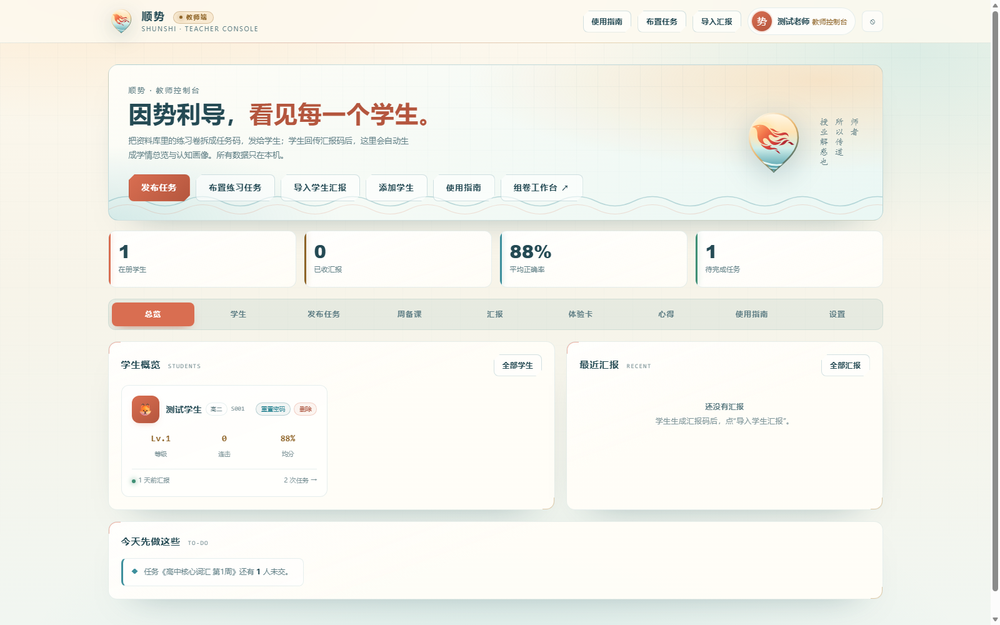
指南已经汇总。以后不用记四个地方的说明：打开教师端，点顶部“使用指南”，或者点导航里的“使用指南”，就是这一整份。也可以在新窗口单独打开、打印成 PDF。
先记住这条底线：四个页面共用同一个浏览器的本地存储。换浏览器、清理浏览器数据、换电脑，都会看不到旧数据。所以每周做一次备份，备份文件放到 U 盘（见第 11 节）。
PUBLIC HOME
主页：访客能看到什么
主页是顺势的“窗户”。它只展示公开介绍和老师主动发布的学习心得，不展示学生姓名、成绩和班级。
- 主页看三块：品牌介绍、公开的学习心得、学习平台介绍。它不需要登录，也不会自动读取教师端数据；教师端和使用指南只留给你自己。
- 心得由老师发布。在教师端“心得”里写草稿 → 导出 insights.js → 交给 Claude 发布。只有老师能写，学生端和主页都没有编辑入口。
- 公开内容要脱敏。心得里不要写学生姓名、分数、学校、班级和家庭情况。写方法、写观察、写思考，不写隐私。
- 私人数据不上主页。学生档案、成绩、任务记录、教师备注都只在本机浏览器里，主页不读取，也不会自动上传。
主页适合放什么？一段教学理念、三篇真实的学习手记、学习平台的介绍和预约方式。让家长一眼知道“这里在做什么”，而不是把学生的成绩单或内部工具摆出来。
公开与私密要分开。主页的心得是公开内容；学生档案是私密内容。发布心得前，先读一遍，确认没有出现任何学生个人信息。
FIRST SETUP
建第一个学生
老师先建档案，学生才能用“学号 + 密码”进入。第一次使用教师端，系统会让你先设一个教师密码。
- 打开教师端，设教师密码。第一次进入时填称呼和密码；密码用 6–16 位字母或数字。这个密码只给老师，学生不需要知道。
- 点“学生”→“＋ 添加学生”。填姓名、年级、学号、初始密码。学号建议用
S-1001这种格式；初始密码用 4–12 位字母或数字，发给学生本人。 - 保存后，点学生卡片 →“生成开通码”。把 开通码 + 学号 + 初始密码 三样一起单独发给学生。学生第一次打开学生端时，粘贴开通码就能自动带入姓名和密码。


忘记密码、改密码、删除学生 ACCOUNT CARE
- 看学生密码：学生卡片 →“编辑 / 密码”→ 点密码框右侧“显示”。核对完直接关掉，不会改密码。
- 重置学生密码：学生卡片上的“重置密码”（或详情页“重置学生密码”）会生成一段重置码。把它单独发学生，学生在登录页点“用老师的重置码找回”，粘贴后自动进入，等级、任务、宠物都不丢。
- 改密码：在“编辑 / 密码”里输入新密码并保存。旧任务码会失效，系统会立刻生成新的重置码，记得发给学生。
- 删除学生：卡片右上角“删除”，或详情页“删除学生”。删除后这名学生的本机记录不再显示；已经发出去的旧任务码不会影响其他学生。
学生说“每次都要重输密码”：登录页勾选“记住密码，下次点一下就能进入”。密码只保存在学生这台设备，不上传；公共电脑不要勾。
开通码和密码不要发班级群。一个学生一份，单独发给本人或家长。密码是学生档案的钥匙，公开后别人也能导入他的任务。
小技巧：学号里不要写真实姓名，用 S-1001、S-1002 就行。这样截图、备份码里都不会出现学生全名。
BUILD PAPERS
组卷工作台：把资料变成练习卷
资料库是“仓库”，组卷工作台是“加工台”。上传的资料先存进本机资料库，再按题型拆成可以发给学生的练习卷。
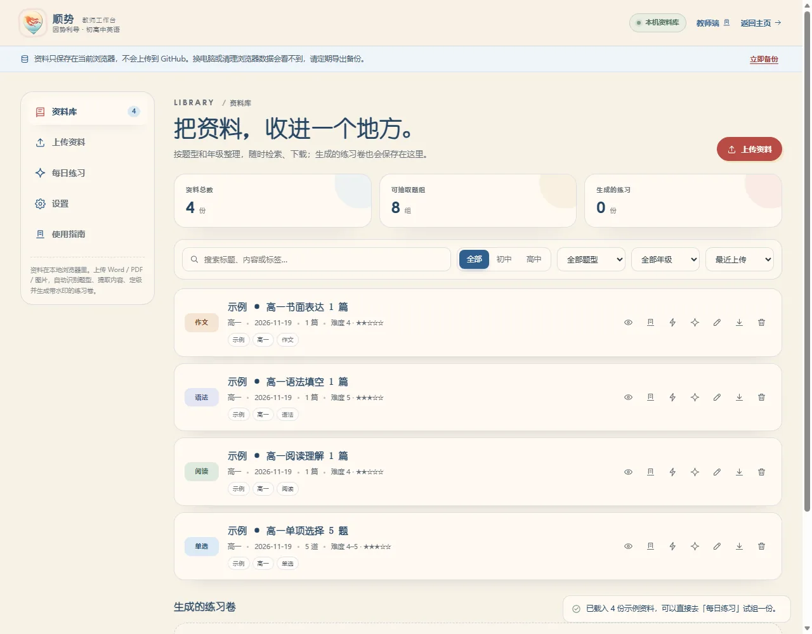
- 上传资料。支持 Word、PDF、TXT 和图片。系统会读取文字并完整保留原文件；扫描版 PDF 会先尝试本机 OCR，默认读整本全部页，也可以在设置里限定“从第几页到第几页”。上传 PDF / Word 时默认勾选“保留原题排版”，会按原文件把每道题切成图片。
- 上传并智能识别。点“上传资料”，把 Word (.docx) 或 PDF 拖进虚线框（旧版 .doc 请先在 Word 里另存为 .docx）。一道题、一份只有一种题型的专题卷、一整套试卷都可以；一次选多份也可以，系统会逐份让你确认。已保存 AI Key 时，上传后会自动准备 AI 判断题型、拆开大题，并先显示预计费用，你点确认后才发送；没有 Key 或 AI 失败时，自动用本机规则兜底。识别后核对题型和题数，可改可勾选，确认后才入库；勾选“同时生成可布置的练习卷”，每个题型会生成一份，教师端“发布任务 → 练习卷”里直接能选。AI 只发送题目正文（会先尽量剔除答案区），不含学生信息，记录只留在本机教师端。听力部分整段留在本机，不发给 AI；整理完会自动接回原来的位置，既不丢听力原文，也省下这部分费用。若在“设置 → U 盘工作区”选过 U 盘并打开自动保存，每次识别的分类结果还会追加到 U 盘“分类记录 / 顺势分类记录.csv”。
- 逐题检查。点开一份资料，可以按“每题一屏”核对题干、选项、答案和解析；发现识别错位，直接改。
- 需要时再用 AI 整理。“AI 整理”“AI 重新编排”可以清理杂讯、补分类、去重和排版美化；它按量计费，只有你点按钮才调用。听力原文不会发送，AI 只处理其余题型，整理后听力自动接回原位。不点也完全可以手动整理。
- 保存到资料库。生成的练习卷会回到资料库，之后在教师端“发布任务 → 练习卷”或“B 阅读联动”里就能选到。
- 提取生词。在“发布任务 → B 阅读联动”里从资料库选一篇或同时选多篇材料，点“提取全部单词”。题干和选项里的词也会一起算进去；提取到多少就保留多少，再由你填“分成几天”，点“平均分配”把全部单词平均排进这些天。
批量删除：一次清掉一批资料或练习卷 BATCH DELETE
资料越攒越多时，不用一份一份点删除。资料卡和练习卷历史卡的左上角都有一个小方框。
- 勾选要删的卡片。点左上角方框，卡片会显示选中状态，再点一下取消；工具栏会实时显示“已选 N 份”。
- 只删眼前这一批？先按题型、年级或搜索词筛好，再点“全选当前 N 份资料”（练习卷页是“全选当前 N 份练习卷”）。它只会勾中当前筛选出来的卡片，不会把藏起来的资料一起删掉。
- 点“批量删除（N）”。系统会先弹确认框，写清要删几份；确认后才真正删除。删除资料时，它拆出来的题目也会一起删。
- 选错了点“取消勾选”。只清空勾选，不删任何东西。只想删一份时，原来的单份删除按钮仍然可用。
- 练习卷也一样。切到练习卷历史列表，勾选多份后点“批量删除（N）”；如果删掉了当前正在预览的那份，预览区会自动清空。
批量删除不能撤销。重要资料先导出备份，或存一份到 U 盘「资料备份」，再清理。
题库：像翻题库一样逐题勾选 QUESTION BANK
上传并确认入库后，题目会按题型进「题库」。这里不按整份资料打包，而是分题型排好；点开就能看到完整题目，挑中哪组就带哪组。
- 先选题型。顶部按题型分成按钮，点哪个题型就只显示哪个题型；还可以按年级、资料筛选，或直接搜题干、选项或资料名。
- 看题库序号，不被原卷题号绕晕。题库里每个题型从“第 1 组”往后连续编号；原卷题号（比如 21–25）只放在下面一行小字里备查。重新拼出来的练习卷也会按新卷从 1 题开始连续编号，不会再出现好多道“21 题”。
- 逐题看。每道题的题干和选项都完整显示。单选直接列出；阅读、完形这类共用一篇材料的大题，会先显示原文和每道小题，原文可以收起。
- 识别错了就当场改。每张题卡右下角有“编辑”按钮，点开只显示这一道题。题干、选项、答案、解析、原文和题组名称都能直接改；改完点“保存全部修改”。文字修改不会动原题图片；图片本身不对时，要回资料卡重新生成。
- 对照学生练习记录。题库上方的“对照学生练习记录”里勾选学生，每道题下面就会显示他练过几次、对几次、错几次、最近一次是什么时候。没练过会写“还没练过”，方便你决定下次布置哪几组；选两位学生就能横向比较。记录只读本机教师端，不上传。
- 勾进候选栏。题目左边的方框就是勾选；共用同一篇材料的题组会整组勾选，避免组卷时把材料拆散。勾选后，底部会出现候选栏，显示“几组·几题”，可以继续翻其他题型。
- 一次组卷。凑齐后点候选栏里的“生成练习卷”，会跳到排版预览；核对题号、答案和版面，确认后点“存入练习卷”，之后在教师端就能布置。
- 分类存 U 盘。点“题库存到 U 盘”或候选栏里的“所选存 U 盘”，会在 U 盘的「题库」文件夹里按题型分别写一份 JSON 和一份 CSV。CSV 可以直接用 Excel 打开，JSON 是给以后恢复或程序读取的完整版本。
共用材料的题组按组勾选。一篇阅读下面有两三道小题时，勾选任意一题都会把这一组一起带进练习卷，篇目不会丢。候选栏统计的“题”是小题数量，“组”是资料里拆出来的题组数量。
词汇书：整本放上书架 WORD BOOKSHELF
适合一次拿到整本词汇书、想先收进资料库再慢慢挑词的情况。词汇书和工作台上的题目分开保存，不占题库的位置。
- 上传整本。点左侧“词汇书”→“选择词汇书”，支持 .pdf、.docx、.txt、.md。一次上传一整本，几百页也可以；扫描版会自动走本机 OCR，页数多时请让电脑保持开机。词汇书会整本读，不受试卷的页码范围限制。左半页是单词、右半页是释义的对开排版，会按左右两边的编号自动配对，再按编号把全书排回顺序；编号和页码不会混进释义里。
- 编号太乱就让 AI 清理。原文夹着“1.2…”、页码、点线或两栏粘连时，上传后点“AI 清理词表”。会先显示预计费用，你点确认后才把这本书的文字发给 DeepSeek，不发送学生信息；清理结果和本机识别合并，已有的词不会丢。
- 看封面。存好后，词汇书页显示一本本封面，像电子图书馆的书架；点封面才打开这本书的全部单词。
- 翻单词、勾选。点开后可以搜索单词或释义，按页翻看音标、词性、中文意思和例句；可以勾选本页、全选筛选结果，或逐条勾选。
- 把词用起来。底部候选栏可以把选中的词导出成 CSV / TXT，也可以存到 U 盘「词汇书」文件夹；点“带到教师端”会打开教师端的单词任务窗口，自动填好词表。
词汇书只保存文字和单词，不重复保存原文件。原书请自己留好；换电脑或清理浏览器数据前，先在设置里导出备份。带到教师端时不再截成 80 个：一本书勾了多少词，就带多少词；整本 860 个词也能一次带走，再按“每天最多词数”自动分成多天。
扫描 PDF：读整本，或只读几页到几页 PAGE RANGE
到「设置 → 扫描 PDF 识别范围」：默认是“读取全部页”，整本练习册或词汇书会从第一页读到最后一页。只想先整理其中一段时，选“只识别指定页码”，填“从第几页开始”和“到第几页结束”；结束页留空或填 0 表示读到最后一页。
页数越多越慢，识别时电脑不要休眠。已经确认是文字版的 PDF 会直接读文字，不走 OCR，速度会快很多。
保留原题排版 KEEP ORIGINAL LAYOUT
上传 PDF 或 Word 时，“保留原题排版”默认勾选。系统会在本机把每道题按原文件的位置切成图片，字体、题号、选项、分栏都照原样，不再靠文字重新排版。
- 只在本机处理。切图不联网、不上传、不调用 AI，不产生费用。扫描版 PDF 没有文字层，定位不到题目时不会生成图片，文字仍会正常入库。
- 随时对比。练习预览上方有“切换文字版 / 切回原图”；原图版的题号和答案区沿用原卷印刷题号，不会重新从 1 编号。
- 导出 PDF 最稳。点“导出 PDF”，在弹出的打印窗口选“另存为 PDF”，原题图片会完整保留。Word 适合改题，答案区排版以 PDF 为准。
- 题目图片 ZIP。每道题一张 JPG，文件名带题型和题号，可单独插到课件、讲义或其他文档里。
- 旧资料补图。之前上传的 PDF / Word，在资料卡片上点“按原文件生成原题图片”即可补齐；已生成的练习卷会一起更新。
原图版用于打印、PDF 和课件。学生端的任务码只装文字，装不下图片；需要把原题发给学生时，请打印或导出 PDF 后另外发送。
资料只在本机。上传的文件和生成的练习卷存在这台电脑的浏览器数据库里，不会上传到 GitHub 或服务器。换电脑或清理浏览器数据前，先在组卷工作台里导出备份。
只用原创或已授权的材料。可以整理自己编写的讲义、学校允许使用的材料，或明确授权的公开资源；不要把学校试卷、出版社教材原样拿来售卖或公开传播。
第一次用，先点“载入示例资料”。示例会走一遍“上传 → 识别 → 组卷 → 保存”的完整流程，熟悉后再上传自己的资料。
PUBLISH CENTER
发布中心：A 单词书 / B 阅读联动 / C 语法专项
教师端的打卡入口已经收成三个：A 整本单词书、B 阅读联动（核心）、C 独立语法。所有任务生成后都不会立刻变成一堆码，而是先进入最上面的“待发区”；核对人数和内容，再一键合并成“一人一码”。
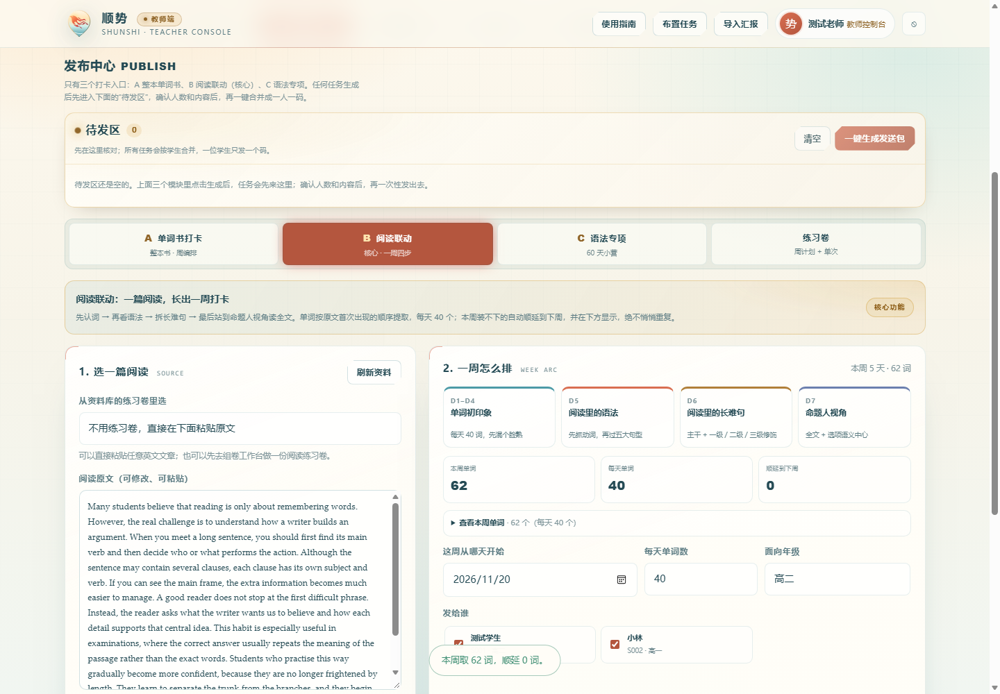
先认识“待发区” OUTBOX
以前一点“生成”，马上就出一串任务码；发给谁、发没发全，全靠自己记。现在改成“先等候，再统一发”：
- 任何入口生成的任务，先进入“待发区”。单词书、阅读联动、语法专项、练习卷都一样。待发区会写清：哪位学生、哪几天、多少词 / 多少题。
- 在这里核对人数和内容。发现漏了学生、周起始日选错、词量太多，可以清空重来；还没发出去的任务不会跑到学生那边。
- 点“一键生成发送包”。系统按学生合并：同一位学生这一周的所有任务，只生成一个码。不会再出现“单词一个码、语法一个码、阅读又一个码”。
- 把每位学生的那条微信消息单独发给他。消息里是一条链接，不是一大坨字符；纯码收在折叠栏里，平时不用打开。
为什么多这一步？先把“要发什么”摆出来，再决定“怎么发”。这样不会发到一半发现漏人，也不会同一份任务发两遍。待发区只在本机，不会自动发给学生。
A · 单词书打卡：一整本书，一周一周往下排 WORD BOOK
适合手里有一整本词汇书、想按周稳定推进的情况。点“A 单词书打卡”，导入词表，系统会按周排成多个任务栏，一周一周接着往下走。
- 导入整本单词表。每行一个词，支持“benefit 益处 | Reading has many benefits. | 阅读有很多好处。”这种带例句的格式；音标和释义会自动补全。
- 插入任务栏。一栏就是一天；单词日和语法日可以混排。系统默认给 5 天单词 + 2 天语法，也可以自己改。
- 设置难度和任务量。每栏可选高频、中频、低频、错词回炉或按水平自适应；顶部再用“基础巩固 / 标准 / 加难 / 冲刺”统一加减。
- 看“学情依据与分配预览”。系统会读每位学生上周完成天数、一次答对率、当前等级、错词和最弱的一项，决定这周给多少词、先给哪一档。每人下面有一条“这本书的累计进度”：已经练过多少词、还剩多少词、累计对错和最近练过的词；上次周任务交了几个单词栏也会写出来。
- 生成后进待发区。核对无误，再一键生成发送包。已经做过的词会自动跳过，错词优先回炉；点“续编下周”会从这本书没做过的词继续。下次不知道布置什么时，看进度条和“还剩 N 个词没练”即可。
整本书一次带走：一天 50 词怎么排
学生每天要学 50 个词甚至更多时，不用把词汇书拆成好几次。书架里全选、按筛选结果全选或逐条勾选，点“带到教师端”，勾中的词会全部进入单词任务窗口。
- 点“生成预览”。系统从本机释义库补全音标和中文；预览里有多少词，就会发布多少词，不会再只留前 80 个。
- 填“每天最多词数”。默认 50，可填 4–200。系统从第一个词开始按顺序装天：860 个词、每天 50，就是前 17 天各 50 词，第 18 天 10 词；120 个词、每天 50，就是 50 + 50 + 20。
- 填“从哪天开始”。第 1 天就是这一天，之后每天自动往后排一天；提示会写清一共几天、最后一天是哪天。
- 生成一人一码。多天任务合并成一条码，先进待发区；学生导入一次，每天完成当天后自动解锁下一天，不用每天发码。
最后一天词少是正常的。前面的天都按你填的上限装满，余数留给最后一天。想让每天更平均，可以把“每天最多词数”调小，天数会变多；如果希望最后一天也别太少，就微调上限，看提示里的“最后一天 N 词”接近上限为止。例如 860 个词填 54，就是前 15 天各 54 词、最后一天 50 词。
分成多天时有两件事要知道。第一，多天任务会覆盖全部词，不再按学生水平减词；想要每人词量不同，请用单天任务里的“智能配词”。第二，生成多天码前，每位学生都要先设好密码；缺一个都会提示，整批不会生成。
词表要有梯度。智能配词只能在老师给的词表里挑。一次粘贴 20–50 个甚至更多都可以；从易到难都有，系统才有挑选空间。词多时用“每天最多词数”分成多天，不会因为词多就少发；只给 4 个词时才无法分档。
单词怎么循环复习：1 → 2 → 4 → 7 → 15 → 30 天 SPACED REVIEW
单词不是“当天背会”就结束。系统已经把这套复习循环做进学生端，老师和学生都不用自己算日期：每个词第一次答对后，隔 1 天再考；之后每答对一次，间隔升一档，依次是 2、4、7、15、30 天；答错就回到“明天再见”。
| 第几次成功回忆 | 下次什么时候复习 | 说明 |
|---|---|---|
| 第 1 次（当天学会） | 明天 | 先趁热打铁，确认不是短时记忆 |
| 第 2 次 | 2 天后 | 开始拉开间隔 |
| 第 3 次 | 4 天后 | 从“眼熟”转向“想得起” |
| 第 4 次 | 7 天后 | 隔一周还能回忆，才算记住 |
| 第 5 次 | 15 天后 | 进入长期记忆 |
| 第 6 次 | 30 天后 | 一个月后仍能回忆，标为“已稳固” |
| 第 7 次及以后 | 每 30 天 | 保持不掉，不再无限加长 |
学生每天到底做什么
- 先做“今日复习站”。学生端会把今天到期的旧词自动拼成一张复习卡，最多 60 词，排在任务列表最上面；到期的词越多，经验也越多（30–80）。没有到期词时，这张卡不会出现。
- 再做当天的新词任务。新词第一次答对，明天就会进入复习站；所以“学新词”和“复习旧词”每天各有一小段，不会堆到周末一次背完。
- 答错不用手动记。这个词的复习进度会清零，明天重新出现；答对后再从 1 天、2 天……一档档升回去。
- 同一个词一天只记一次成绩。即使老师同一天发了两份都含这个词的任务，也不会被当成两次复习、把间隔一下刷高。
- 看“下次复习”。单词任务交完后，成绩表最后一列会写每个词下次复习的日期；学生和家长都能看到“这个词什么时候该再见面”。
老师怎么安排一周
- 推荐节奏：5 天新词 + 1 天复习 + 1 天休息或测试。周一到周五每天“复习站 + 新词”；周六只做复习站和错词，周日休息或做一次小测。
- 新词量按学生承受力定。50 词/天适合冲刺型学生；如果当天复习站也接近 60 词，可以把新词降到 30–40，或把复习站分早晚两次做。系统把复习站封顶 60 词，就是为了防止一次压垮学生。
- 不要同一天反复听写同一个词。当天连续抄十遍、考十遍，看起来熟，第二天忘得也快；按上面的日期隔开再回忆，效果更稳。
- 看汇报时重点看“错词”和“复习天数”。错词多，说明新词量或难度偏高；复习站长期做不完，说明到期词积压，先把新词停两天，把旧账清掉。
为什么这样设计（依据）：① 间隔效应：Cepeda 等（2006，Psychological Bulletin）汇总大量实验发现，隔开复习比集中突击更耐久，而且“隔多久”要跟着“要记多久”走；② 提取练习：Roediger & Karpicke（2006，Psychological Science）和 Karpicke & Roediger（2008，Science）发现，合上书主动回忆比反复重读更能促进长期保持；③ 三次成功回忆后再拉开：Rawson & Dunlosky（2011，Journal of Experimental Psychology: General）的做法是先练到能连续回忆，再隔开做几次提取；④ 逐步拉长间隔：Kang 等（2014，Psychonomic Bulletin & Review）发现逐步拉长与等距间隔的最终记忆接近，但训练过程中的回忆成功率更高，所以这里用 1→2→4→7→15→30；⑤ 交错练习：Rohrer & Taylor（2007，Instructional Science）发现把不同题型/内容混着练，比一次只练一种更能迁移，复习站因此把不同日期的词混在一起；⑥ 成熟软件的做法：Anki / SuperMemo 的 SM-2 也是按每次回忆表现把间隔逐级拉长；⑦ 词汇接触量：Nation（2001）总结一个词通常需要在不同语境中反复遇到 5–20 次以上才可能真正掌握，所以每个词会经历“新词任务 + 多次复习站”，而不是只考一次。
B · 阅读联动：一篇阅读，长出一周打卡 READING LINK · 核心
这是教师端最核心、也最独一无二的功能。它不是“阅读题 + 单词题”的拼盘，而是一条有顺序的学习链：
核心思想是：先对单词有初印象，再对语法结构有基本认识，然后对阅读中的长难句做语法点学习，最后在相对“全知全能”的视角下练这篇阅读，体悟命题人的出题思路和出题要点。学生不是一上来就被整篇文章吓住，而是先把地基铺好，再站到高处看全文。
第 1 步：选材料（五种题型，可多选）
- 点“浏览资料库 · 看预览选文章”。会弹出一个小窗，顶部是题型按钮：“全部 / 阅读理解 / 完形填空 / 五选五·七选五 / 语法填空·短文填词 / 单项选择”。底部会写“N 份 · 点卡片多选”。
- 先选题型，再点卡片多选。卡片会显示标题、词数、内容预览和题目数量；点一下卡片就勾选，左上角出现 ✓，再点一下取消。想组合几篇就点几篇。
- 看“已选 N 份”，点“加入所选（N）”。系统会按选择顺序把几份材料的正文拼在一起，原题也合并后重新从 1 题连续编号；阅读区上方会显示“已选 N 份材料”。
- 选错了点“清空选择”。清空只取消勾选，不会关窗；重新点卡片即可。单篇也能正常用，多选只是把几篇合成一个 B 板块。
- 也可以直接粘贴原文。没有入库的任意英文文章，粘进“阅读原文”也能用；粘贴会替换掉当前多选的材料。
- 填“这周从哪天开始”和“面向年级”。起始日决定学生端哪天解锁；年级只用来帮 AI 控制难度。
为什么单选、完形、五选五、语法填空也能选？B 板块的核心不是“做阅读题”，而是“先学单词，再读懂句子和篇章”。这五类材料里都有可提取的词、可讲的语法和可拆的长难句，所以都能作为一周学习的起点。
多选后单词从哪里来？提取会扫描“每篇正文 + 所有题干 + 所有选项”。选项里的词也会进入单词打卡，不会出现“文章读得懂、选项看不懂”的漏洞。比如两篇阅读合在一起选，两篇的正文、题干和 A–D 选项都会算进词表。
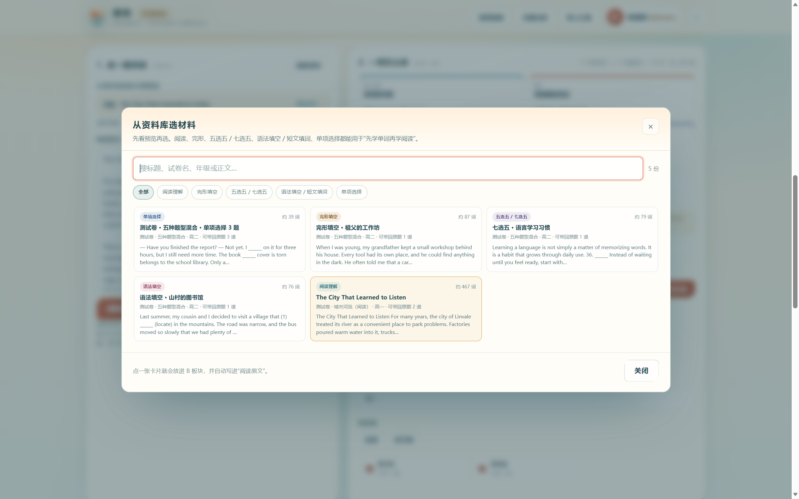
第 2 步：提取全部单词，再决定分几天
- 点“提取全部单词”。系统会扫描正文、题干和选项，按单词第一次出现的顺序提取，跳过重复词、太短的词、虚词和以前已经排过的词。提取到多少就保留多少，不再只取 40 个，也不会按 4 天截断；上百、上千个词都能全部浏览。
- 先看“可用词”数字。“可用词”不等于原文总词数。比如 467 词的阅读，去掉重复、虚词、太短的词和以前学过的词后，可能得到 145 个可用词，这是正常的，不是漏词。
- 填“分成几天”，点“平均分配”。所有可用词会平均分到你填的天数，除不尽的余数补给前几天。比如 145 个词分 7 天：D1–D5 各 21 词，D6–D7 各 20 词，一个都不少。
- 浏览全部单词。展开“浏览全部单词”，可以搜英文或中文，也可以按 D1、D2… 筛选；每个词都有音标和中文意思，方便你先备课。
- 想重新排：点“重置这篇的单词进度”，清空这篇的“已排过”记录，再重新提取。
- 状态会自动记住。刷新页面、关掉浏览器再打开，原文、提取的单词、分成几天、勾选的学生都会恢复。
“每天最多多少词”只是估算天数的助手，不是截词上限。第一次提取会按它先估一个天数；你随时可以改成“分成几天”，再点“平均分配”。现在没有“顺延到下周”了，所有词都在这一次排完。
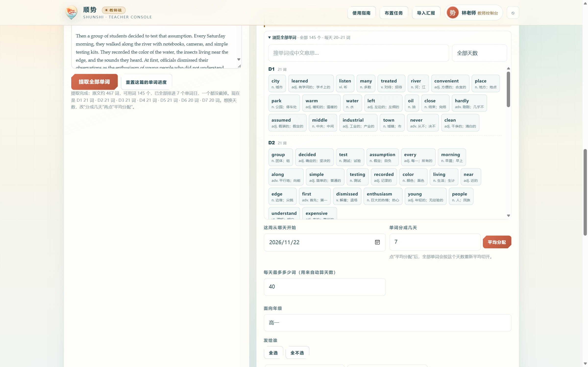
第 3 步：看本篇语法匹配，发给学生打卡
选完文章后，阅读区下方会自动列出“本篇可以讲的语法点”。这一步在本机完成，不调用 AI、不花钱。
- 看匹配结果。系统会从 76 个语法知识点里挑出这篇最适合讲的几个，并写一句“为什么可以讲这个点”。
- 点“查看解析”。会打开语法图书馆的对应条目，里面有规则、例句、搭配、易错点和学生打卡题。
- 点“发给已选学生”。先在“发给谁”里勾选学生，再点这个按钮；这个语法点会进入待发区，和其他任务一起生成发送包。
- 想更准，再点“AI 精准匹配”。只有你点按钮并确认后才会把阅读原文发给 DeepSeek，提示里会写预计费用；不点就不花钱。
- “AI 生成语法 + 长难句 + 命题视角”仍是备课草稿。生成后先展开预览核对，答案和解析确认无误再发给学生；没有 Key 时用本机规则版也能生成观察、拆解和写作任务。
第 4 步：生成一周任务
勾选学生，点“放进待发区”。系统按“你分的单词日 + 3 个阅读日”排：
- 单词日：你分几天就排几天，每天一组词，先混脸熟。145 个词分 7 天，就是 7 个单词日 + 3 个阅读日，共 10 天。
- 阅读语法日：从原文里挑句子，先抓谓语动词，再过五大基本句型；每个语法点挂到 60 天语法课里最接近的一天。
- 阅读长难句日：把句子拆成“主干 / 一级修饰 / 从句（二级）/ 从句里的从句或非谓语（三级）”，学生先自己拆，再点开对照。
- 命题人视角日：全文再读，练主旨 / 结构、作者态度 / 写作目的、选项语义中心与干扰项陷阱；如果资料库里有原题，还会带“原题实战”。
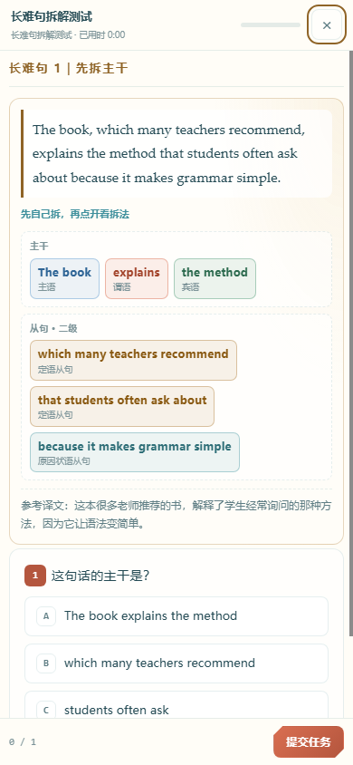
学生在学生端看到什么
- 一天一关，按日期解锁。导入一次任务码，这一周每天的任务都在列表里；完成当天，第二天自动解锁。
- 单词日：看词、听发音、选词义；答错会再考一次，最后交一张单词成绩。
- 阅读日：长难句卡先让学生自己拆，再展开对照；选择题选完立刻判对错，解析会指出“为什么错”。
- 命题人视角日：学生要用一句话说清全文主旨，再做选项语义中心题；不是凭印象选，而是能指出每个干扰项错在哪个局部。
- 交汇报码。这一周完成后生成一个汇报码，老师导入后就能看到每天完成情况、正确率和错词。
老师怎么用在课堂上？先让学生做单词日，课堂上只处理“阅读语法”和“长难句”两天；把学生拆错的地方投出来，对照彩色层级讲。最后一天再让学生用命题人视角重读全文，老师只追问“这句话的语义中心是什么、哪个选项只是局部复现”。
C · 语法专项：不从阅读取材的 60 天小营 GRAMMAR CAMP
如果这一周想单独补语法，点“C 语法专项”。它不从阅读里取材，按 60 天课程地图单独发 7 天；每天 5 分钟，看一句故事句、记一条规则、做 3 道小题、复习 1 道旧题、写 1 句。
不要重复发。如果本周已经在“B 阅读联动”或“A 词汇书周编排”里排了语法，C 这里不用再发一遍。系统会在入口上提醒你。
练习卷与周计划 PAPERS
“练习卷”入口保留两类：单次布置一套卷，或把多套卷按学生难度拆成 7 天“周计划”。周计划也可以和单词日混排；生成后同样先进待发区，再合并发送。
发布前检查清单 CHECKLIST
- 人齐了吗？待发区里的学生人数，和这次要发的人数一致。
- 周起始日对吗？学生端按日期解锁；起始日选错，会提前或延后解锁。
- 单词天数和人数对吗？看“全部单词 / 分成几天 / 每天词数”，确认所有词都排进去了；再看“已选几人”。
- AI 内容核对了吗？语法点、长难句拆法、选择题答案，至少扫一遍。
- 发的是“微信消息”还是“纯码”？优先复制微信消息里的链接；纯码只在链接打不开时备用。
一句话记住发布中心：A 管“整本书按周推进”，B 管“一篇阅读长出一周”，C 管“独立语法线”。三条线都先到待发区，最后一位学生一个码。
GRAMMAR CAMP & LIBRARY
语法：60 天小营 + 语法图书馆
一条线每天学一个点：看故事句、记规则、做小题、隔日复习、仿写一句。另一条线是语法图书馆：两本语法书整理成 76 个知识点，能搜、能看搭配、能直接发学生打卡。
课程怎么排 CURRICULUM
60 天分八个单元。前 30 天打骨架：句子成分、谓语动词、名词与修饰、基础从句和非谓语；后 30 天加深：从句进阶、非谓语进阶、特殊结构、长难句与篇章。一天一页，不贪多；每一页都围绕“先找主干，再看修饰”。
老师怎么发 ASSIGN
- 教师端 →“发布任务” →“C 语法专项”。左边是“怎么发”，右边是 60 天课程地图；点任意一天可以先看这一天的故事句、规则和 5 个关卡。若本周已在“B 阅读联动”或“A 词汇书周编排”里排了语法，这里不用重复发。
- 选这周从哪天开始。一般选“自动接上”：系统会看每位学生已经学过哪几天，接着往下发，不会重复。
- 勾选学生，点“生成 7 天打卡码”。一位学生一份码，一份码里含 7 天语法课。微信单独发给学生。
- 学生导入一次，每天自动解锁一天。学完这 7 天，再回来生成下一周；没学完也可以接着发，系统会从缺的那天继续。
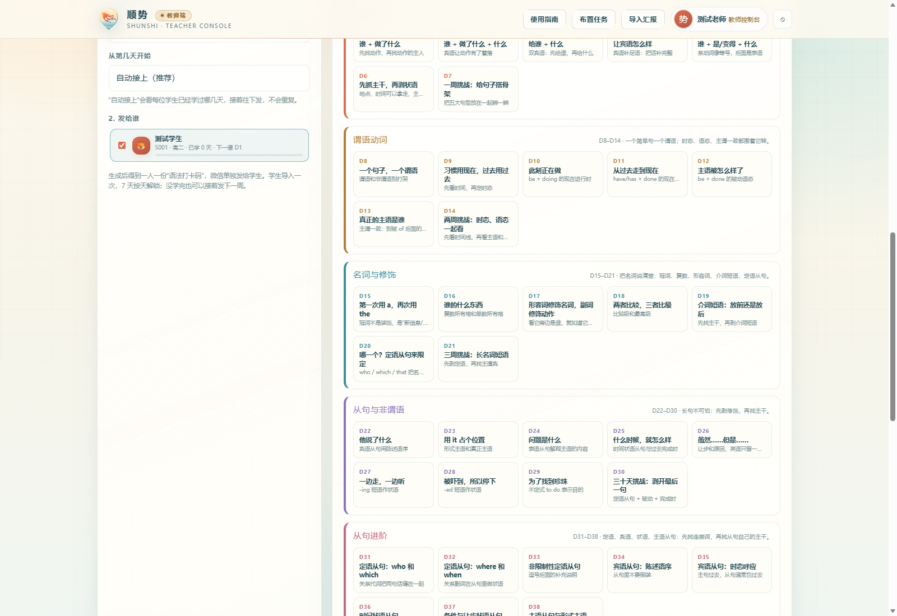
学生怎么做 STUDENT FLOW
- 首页多一张“60 天语法小营”卡片。卡片会显示已学几天、下一课是哪天；点“开始今天的语法课”进入。
- 第一关 · 找骨架：先看故事句，点“遮住标签，自己先猜”遮住成分标签，试着找出谁 + 做什么，再点开对照。
- 第二关 · 懂意思：确认这句话到底在说什么，避免“语法对、意思错”。
- 第三关 · 用规则：用今天学的规则做一道新题。
- 第四关 · 隔日复习：系统自动抽前面学过的一天，隔几天再回忆一次。
- 第五关 · 写一句：用今天的结构写一句自己的话；提交后能看到参考写法。
- 语法专题打卡：从语法图书馆发出的专题不是 60 天课，而是 4 关：看专题讲解卡 → 做 3 道专题题 → 写 1 句仿写。顶部会显示专题名称和“约几分钟”，不会重复写“语法专题”。
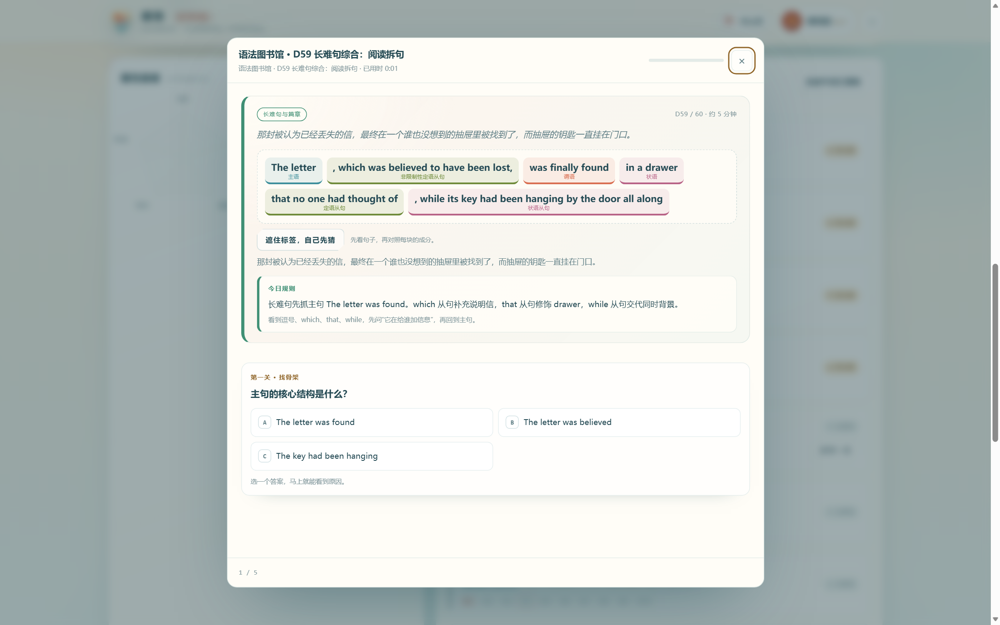
语法图书馆：76 个知识点，能搜、能发打卡 GRAMMAR LIBRARY
语法图书馆把 60 节语法课和 16 个进阶专题放在同一个入口里，一共 76 个知识点。它主要方便老师备课：遇到一篇阅读里的长难句，先搜一下，马上能看到规则、例句、搭配和易错点；需要发给学生时，直接进打卡。
老师怎么查
- 打开入口。教师端 →“发布任务”→ B 阅读联动里的“打开语法图书馆”，或 C 语法专项里的同名按钮。
- 搜关键词。在搜索框输入“定语从句、被动、冠词、虚拟、搭配”等词；左边会实时筛出相关知识点。
- 按类型筛选。顶部可切“全部 / 60 天课程 / 进阶专题”；60 天课程按 D1–D60 排，进阶专题按主题排。
- 看详情。每个知识点都有：先看场景、人话规则、句子成分、中英对照例句、判断口诀、最容易错的地方，以及学生打卡会做的题（含答案）。
- 需要更口语的解释。点“AI 口语化解析（消耗少量额度）”，确认后才会调用 DeepSeek；不点就只在本机查看，不花钱。
怎么发给学生打卡
- 在详情页底部勾学生。可以勾一个，也可以勾多个。
- 点“发给已勾选学生打卡”。这个语法点会进入待发区，不会立刻发出去。
- 回待发区核对，再一键生成发送包。语法专题和单词、阅读任务会合并成每位学生一个码。
阅读联动怎么自动匹配
- 选完阅读，往下看“本篇可以讲的语法点”。本机先从 76 个知识点里挑候选，并写一句匹配理由；免费、即时，不上传原文。
- 点“查看解析”。直接打开对应知识点，核对规则和例句。
- 点“发给学生打卡”。把这一篇最值得讲的语法点发给学生，和阅读任务同一天或随后几天完成。
- 想更准，再点“AI 精准匹配”。只有你点按钮并确认后才调用 AI，会把阅读原文发给 DeepSeek；提示里会写预计费用。
16 个进阶专题包括：一般过去 vs 现在完成、被动语态进阶、定语从句、名词性从句、状语从句、非谓语动词、虚拟语气、倒装、强调句、主谓一致、比较结构、介词搭配、连词逻辑、间接引语、冠词、情态动词表推测。
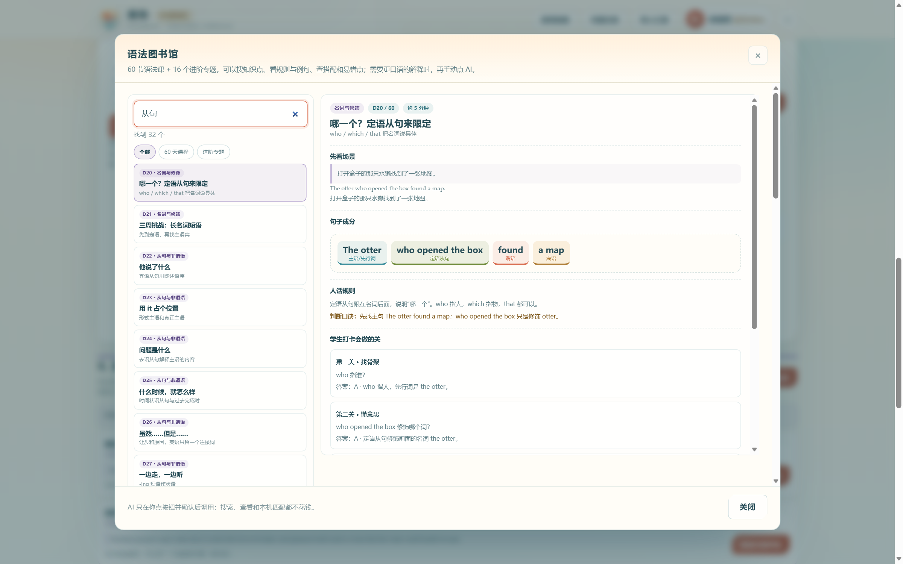
为什么这样设计 EVIDENCE
课程骨架参考了两本语法书：叶永昌《英语阅读参考手册》以关联词和常用词为引子，讲清功能词的判别与搭配；《语法透析手册》用“五大句型 + 八大成分 + 场景句”先搭骨架、再添修饰。每日形式则参考了成熟做法与研究结论：
语言学习建议约四分之一时间做“聚焦语言形式”的练习。每天 5 分钟语法，正好补上这一股。
隔几天再回忆一次，比一次学很久更牢。对应：第四关自动抽前面学过的一天。
答完立刻告诉学生“为什么错”，效果明显好于只报分数。对应：每题即时解析。
自己写一句，才会注意到缺什么。对应：第五关“写一句”，配参考写法。
一周围绕同一句，每天换一个任务。对应：一句故事句，拆成找骨架、懂意思、用规则。
每期只讲一个点，讲完立刻小测。对应：一天只学一条规则，3 道题当场用。
左页讲规则、右页做练习，一页一个单元。对应：学生端“规则卡 + 5 关”的单页结构。
即时反馈、难度自适应、连续记录能帮助坚持；但连击也可能变成压力。对应：不排名、可补学、奖励只记本机。
句子和题目都是原创。两本书是方法来源，课程里的故事、例句和练习为原创，不复制书中的例句和题目，避免版权问题。
和单词打卡有什么不同？单词打卡练“词义提取”，语法小营练“句子结构”。词汇书周编排可以把语法日混排进去；阅读联动则会把阅读里的语法点挂到 60 天课程上。想单独补语法，再到“发布任务 → C 语法专项”发 7 天码；三条路径最后都会在待发区合并成一人一码。
STUDENT SIDE
学生端：打卡、答题、养精灵
学生端把学习做成一条看得见的成长线。答对就喂精灵，答错自动回炉。不靠付费抽卡，也不排名。
- 学生打开学生端，输入密码。第一次用老师发的开通码建档；以后直接输密码进入。
- 首页先看到当前出战的精灵。四只开局伙伴是小潮獭、星尾狐、云海鲸、焰羽雀；另外十六只靠打卡、连续天数、经验池、单词量、汇报次数等学习行为逐只解锁。点“神兽收藏”展开折叠图鉴，就能切换当前出战神兽。再往下是任务列表；点任务卡开始这一轮。
- 单词题有两种考法。一种是看单词选意思；另一种是“语境推词义”，给一句英文，挖掉目标词，让学生从四个中文里选。每题出现时会自动读一遍单词或整句，想再听就点“听读音 / 读句子”。答对一题，当前精灵立刻 +2 成长；答错会显示正确答案，这个词会自动进入最后的“错词回炉”。
- 先做“今日复习站”。到期的旧词会自动组成一张复习卡，最多 60 词，排在任务列表最上面；先回忆旧词，再做当天的新词。每个词什么时候该复习，系统按 1→2→4→7→15→30 天自动排，答错就回到明天。完整规则见单词怎么循环复习。
- 做完点“提交任务”。系统结算经验、成长值和小鱼干；正确率越高，小鱼干越多。
- 回首页点“生成汇报码”。复制发给老师。老师导入后，才能看到这次打卡的完成情况和错词。
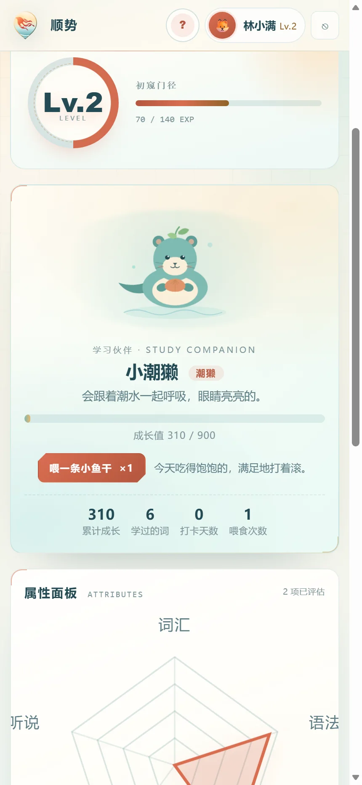

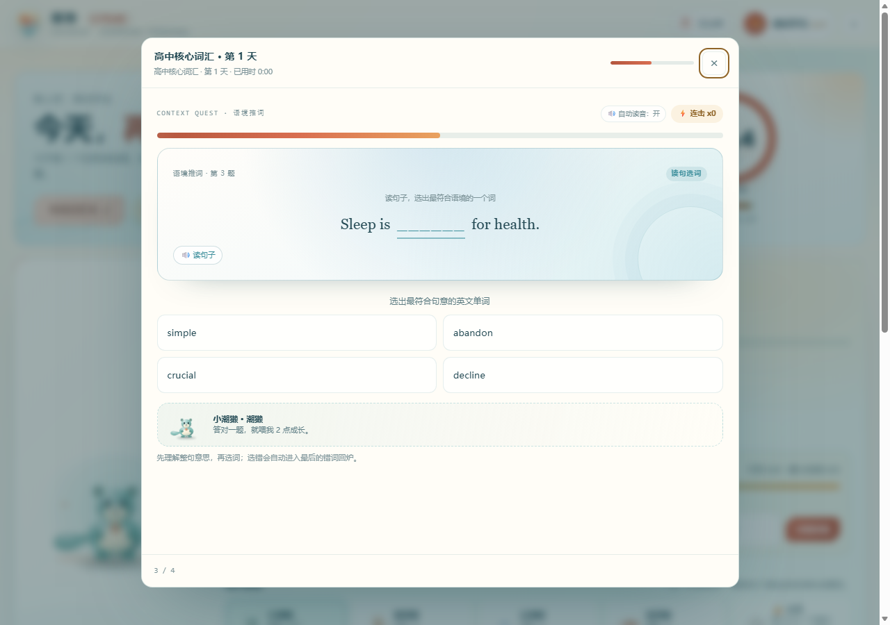
听发音、动感精灵、手机不滚动 DAILY FEEL
- 自动读音 + 手动重听：每道新题出现时，系统会自动读一遍；单词题读单词，语境题读整句。想再听，点大单词、句子或“🔊 听读音 / 读句子”。不想外放可以点“自动读音：关”。系统先用设备自带的英语朗读；如果设备没有声音或浏览器拦住，会自动改用在线词典发音。第一次点没声音，再点一次；仍然没有，检查电脑/手机是否静音，或换 Chrome / Edge。
- 精灵会动：首页精灵默认轻轻浮动、眨眼、吐泡泡，尾巴也会摆。点一下精灵，会冒爱心；点“动感：关”可以停掉动画，适合上课或容易分心的学生。
- 答题不用上下划：语法改成“一题一屏”，选项就在屏幕上；单词选项在手机上排成 2×2。打开任务后是全屏答题页，选完当前题才出现“下一关”，不需要在长页面里找按钮。
- 记住密码：登录页默认勾选“记住密码”。退出后再打开，点一下就能进入；不想记住就取消勾选。只存这台设备。
二十只神兽，每只四个阶段 EVOLUTION
图鉴里有四只开局伙伴：小潮獭、星尾狐、云海鲸、焰羽雀；其余十六只要靠学习行为解锁。解锁条件故意做得不一样，难度从“连续 3 天”一路递进到“累计 30 天 / 3000 经验池 / 首次融合”：
| 神兽 | 解锁条件 | 形象 / 属性特点 |
|---|---|---|
| 夫诸 | 连续学习 3 天 | 四角白鹿，水属性，踏浪留雨 |
| 白泽 | 累计打卡 7 天 | 云纹鬃毛、双角、额上竖眼 |
| 玄武 | 累计打卡 14 天 | 玄甲龟蛇，水属性，镇守北方 |
| 烛龙 | 累计打卡 30 天 | 盘曲龙身、口衔烈日，睁眼为昼 |
| 仙鹤 | 连续学习 7 天 | 朱顶白羽，风属性，云中清唳 |
| 金乌 | 晚上 6 点后完成 3 次打卡 | 三足太阳神鸟，日属性 |
| 玉兔 | 完成 5 次单词打卡 | 月宫玉兔，月属性，捣药记词 |
| 梦蝶 | 完成 3 次语法打卡 | 梦属性蝴蝶，翅膀会变句子 |
| 青鸟 | 生成 7 次学习汇报 | 西王母信使，风属性 |
| 狻猊 | 单词正确率 100%（1 次） | 龙生九子，火属性，吞烟 |
| 白虎 | 累计学会 300 个单词 | 庚金神兽，金属性，霜纹 |
| 灵猿 | 累计完成 30 个任务 | 通臂灵猿，木属性，树洞藏错词 |
| 金蟾 | 累计分配 500 点经验 | 月宫金蟾，财属性，背纹随分配增长 |
| 麒麟 | 总经验池累计获得 1200 | 鹿角、鳞片、火鬃、蹄下生云 |
| 鲲 | 总经验池累计获得 3000 | 北冥巨鲲，水属性，化鹏九万里 |
| 应龙 | 首次融合精灵 | 有翼龙神，雷雨属性 |
每只都从 0 成长开始，到 300、900、2000 各进化一次。升级后不只是换名字：角、鬃毛、鳞片、尾羽、光环会逐级长出来，体型也会变大。不同属性还有不同的待机动画（水波、火焰、飘风、月晕、雷光等），不再全是上下浮动。神兽多了以后，图鉴可以一键收起 / 展开；点图鉴就能切换当前出战神兽，其他神兽的成长值不会清零。
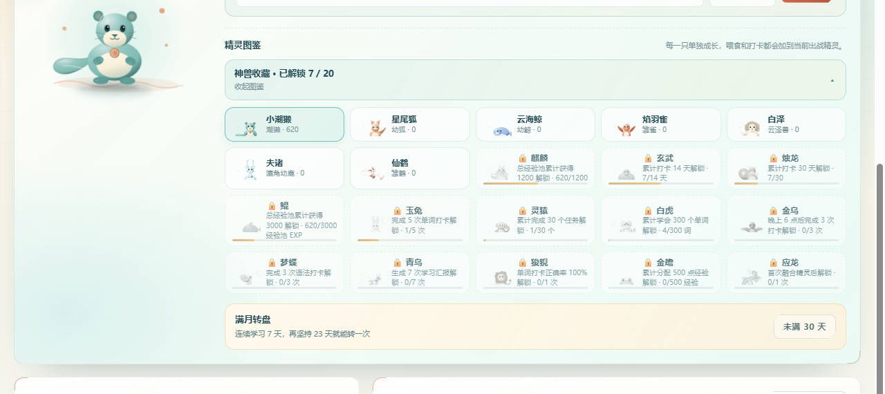
神兽面板下方有一条常驻的“融合栏”，显示下一组可以融合的神兽和各自还差多少成长；点“看看还差多少”可以先看融合预览。任意两只都到终极形态（2000）后即可融合，得到潮焰星狐、云焰鲲鹏等新形象。原来的两只都保留，随时可以切回去。
融合不是一次性的终点：每凑齐一对新的终极神兽，就能再融合一次，已融合的神兽会收进融合栏。融合神兽有自己的“共鸣”成长线——2500 初醒、3000 共鸣、3500 星辉、4000 月蚀、5000 无相；每跨一级会得到小鱼干，月蚀和无相还会解锁「融相」「无相」称号。点融合栏里的名字，可以在多个融合形态之间切换。
总经验栏：自己决定喂哪只神兽 XP POOL
学生端精灵卡下面有一条“总经验池”。打卡和完成任务结算的账号经验，会按 60% 进入这个公共池；池子里有多少可用经验，就会显示多少。学生可以：
- 选一只神兽作为分配目标。下拉框默认跟着当前出战神兽走，也可以手动换成别的。
- 输入要分配的数量。点“分配”后，这部分经验会加到目标神兽的成长值上，池子相应扣减；不会重复计算。
- 看分配记录。每次分配都会留下时间、目标和数量，方便学生自己回顾“经验都喂给谁了”。
为什么要有总经验栏：以前经验只能加到当前出战的那一只，学生想养第二只就得反复切换。现在先攒在一个公共池里，再自己决定投向，既保留选择感，也避免“切来切去漏加经验”。
成长值和小鱼干从哪来 REWARDS
| 动作 | 成长值 | 小鱼干 |
|---|---|---|
| 答对一题 | +2 | — |
| 完成一轮单词打卡 | +8 起（按本轮经验 × 60% 结算，保底 8） | 每 5 个词 1 条，保底 1 条 |
| 账号经验结算 | 其中 60% 进入总经验池，可由学生分配给指定神兽 | — |
| 正确率达到 90% | — | 额外 +1 条 |
| 喂一条小鱼干 | +8 | −1 条 |
为什么完成一轮后成长值才跳一大截？答题时的 +2 是“即时反馈”；完成奖励在点“提交任务”时结算。这样学生不会为了刷成长值乱点选项。
精灵不是付费抽卡。没有充值、没有排行榜。它只奖励三件事：答对、坚持完成、把错词重新练会。老师端不需要管理精灵，也不用发精灵奖励。
满月转盘：连续 30 天的额外奖励 MONTHLY WHEEL
每天打卡，或完成任意一个任务，都算一个“学习日”。连续 30 天后，学生端的精灵卡会出现“满月转盘”。转盘有 6 格加权奖励：小鱼干、成长值、满月宝箱和星辉大奖；转完后重新累计 30 天，才能再转一次。断一天会重新计数，但已经获得的成长值不会清零。
每次转动还会点亮一个月相：新月 → 上弦 → 满月 → 下弦。集满 4 个月相就是一轮“月轮”，会额外得到称号「守月人」「月宫客」「广寒行者」，以及小鱼干或成长值。转盘下方是“月光手账”，记录最近几次转动、当前月相和下一次可转的日期；称号会以小标签的形式显示在神兽名字下面。
为什么用转盘，而不是直接发奖励？不确定的奖励更容易让人期待，但这里只把它放在“连续 30 天”之后，不搞付费抽卡，也不做公开排名。教师端「设置 → 正向反馈设计依据」里写了对应的研究和使用边界（默认折叠，需要时再展开）。
REPORT BACK
把学习痕迹收回来
学生做完任务，生成一段汇报码。老师导入后，统计、五维雷达、认知画像和任务历史会自动更新。
- 学生发来汇报码。在任务完成页或首页点“生成汇报码”，复制整段。
- 教师端点顶部“导入汇报”。也可以到“汇报”页点“＋ 导入汇报”。
- 整段粘贴，点“校验并导入”。系统会用这个学生的密码校验；不是他的码，导不进来。
- 打开学生卡片看结果。“学习画像”看统计和雷达，“任务历史”看每次答题，“汇报记录”看成长曲线。任务历史最上面有“题目累计”和“单词累计”：一共练过多少题次、对多少、错多少、覆盖多少道不同的题或词，最近一次是哪天。
- 想看学生具体选了什么：“任务历史”里每行任务右边有“看作答”。点开能看到每一题的题干、学生答案、正确答案和解析；单词任务会列出每个词第一次是否答对、错词重练是否订正；书面表达会显示原文。下面的“单词打卡记录”按词合并，显示每个词练过几次、对错各几次、最近一次是对还是错、来自哪次任务。
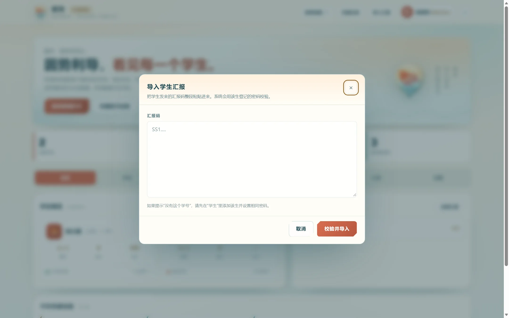
每日汇报码 + 教师端每日看板 DAILY CHECK
一周任务虽然只发一次，但学生可以每天发一次“今日汇报码”，老师就能按天监督，不用等到周末。
- 学生点“生成汇报码”，范围选“今日汇报”。如果当天做过任务，系统会带上今天完成的任务数、平均分、是否打卡、连击天数；也可以补发前几天漏交的。
- 老师导入这份日报码。和普通汇报码一样粘贴导入，系统会把它写进该学生的“每日记录”，同时更新任务和画像。
- 到“汇报 → 每日看板”看这一周。绿色格子表示当天已收到日报；黄色格子表示当天有已完成任务、但还没收到日报；灰色是未打卡。可以切“上周 / 本周 / 下周”。
- 点学生卡片看详情。学生详情里同样能看到每日记录和任务历史，方便周末上课前快速判断“哪几天断了、哪几天是补交的”。
为什么不用每天发新任务：任务还是一次发一周，日报码只负责“报进度”。这样学生不用每天复制新任务，老师也不用每天追着发码；周末仍然只交一次完整汇报。
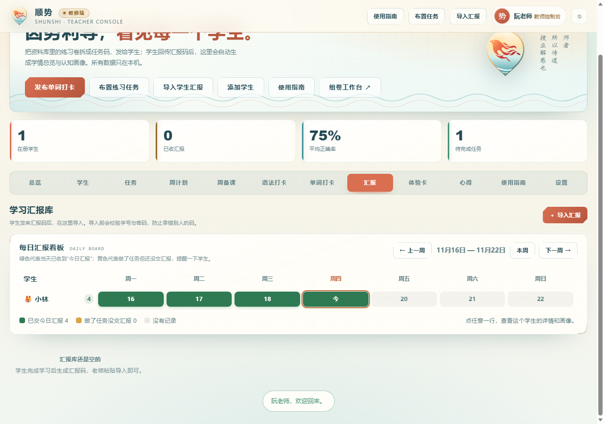
汇报码也是学生的备份。学生换手机时，用“恢复档案”粘贴最近的汇报码 + 原密码，就能把等级、徽章、错题找回来。所以每次做完任务，都建议生成一份。
顺手看一眼“答题信号”。如果学生做得太快、反复改答案、频繁离开页面，或总是选同一个选项，学生端会算出一个低于 55 的信号分。教师端总览会出现“疑似乱选”待办，学生详情里也会标黄并写明原因。它只是提醒，不是自动判作弊；题太简单或网络卡顿也可能触发，请结合课堂表现判断。
一个学生的码只能给一个学生用。汇报码里带学号和密码校验；把 A 的码导给 B，会提示密码不对。这样才能保证画像不被混在一起。
OPTIONAL AI
AI 分析：两条路线，按需选
AI 只是辅助，不是必需品。不配置也完全不影响发任务、打卡、看画像。想省额度，就用免费路线；想省时间，再直连 DeepSeek。
学生详情 →“复制分析提示词”→ 打开豆包 / DeepSeek 网页版 → 粘贴发送 → 把回复粘回“AI 分析”框 → 保存。不花 API 额度，适合偶尔分析。
设置 →“AI 直连”→ 粘贴 DeepSeek Key → 保存 → 学生详情 →“一键分析”。每次点击前都会确认，按量计费。
配置直连 SETUP
- 到“设置 → AI 直连”。把 DeepSeek 的 API Key 粘贴进输入框，点“保存 Key”。Key 只保存在这台电脑的浏览器里。
- 点“测试连接（不消耗）”。它只查模型列表，不产生生成费用；成功后会显示可用模型。
- 打开一个学生 →“一键分析”。确认后才会发送匿名学习数据；结果会填进文本框。
- 核对内容，点“保存 AI 分析”。不点保存，结果不会写进学生档案。

阅读联动里的 AI 备课 READING AI
“发布任务 → B 阅读联动”里有一块“AI 生成语法 + 长难句 + 命题视角”。它只把阅读原文和年级发给 DeepSeek，不带学生姓名、成绩或名单；生成的是备课草稿，不是直接发给学生的最终任务。
- 先提取单词。AI 只从已经确认的原文里挑句子；原文改了或还没提取，按钮会先提醒你。
- 点按钮，先看费用提示。提示里会写预计最多多少输出 tokens、大约多少钱；点确认后才请求。
- 展开预览，逐条核对。语法点是否挂对 60 天课程、长难句层级是否正确、选择题答案和解析是否站得住，都要老师看一眼。
- 不满意可以重试，或直接用本机规则版。没有 Key、额度用完、网络失败，都不影响生成一周任务；只是选择题会少一些。
- 生成任务后进待发区。确认学生和七天内容，再合并成一人一码。
AI 不替老师做决定。它是教研助手，负责把原文拆成可教的句子和题；难度、取舍、课堂上怎么讲，仍然由老师定。答案没核对就发出去，等于把错误交给学生。
额度是怎么省的 COST
| 项目 | 当前做法 |
|---|---|
| 单次实测 | 约 960 tokens（输入 562 / 输出 398），按 DeepSeek 账单计费 |
| 思考模式 | 已关闭，额度留给正文，不花在推理过程上 |
| 输出上限 | 700 tokens，提示词要求 550 字以内、只写四部分 |
| 输入范围 | 只带最近 6 个任务、8 道错题；学生姓名和备注里的姓名会隐去 |
| 调用时机 | 只有你点“一键分析”并确认后才调用；不会后台自动跑 |
所有消耗汇总到教师端 USAGE LEDGER
教师端“设置 → AI 直连”下面有一张“按来源汇总”表。不管是教师端的一键分析、周备课建议、单词语境例句、阅读联动的语法 / 长难句 / 命题视角，还是组卷工作台里的“AI 整理”“单题精修”“智能识别”，只要用的是同一台电脑上保存的 Key，都会记进同一本账：
- 按来源累计：每个来源的调用次数、tokens、费用一直累加，不会因为明细只保留最近 200 条而丢失。
- 看最近明细：下面列出最近 12 次调用的时间、来源、tokens 和费用。
- 看总账：最上面显示累计 tokens（输入 / 输出拆分）、调用次数和估算费用。
- 费用是估算值：按 DeepSeek Flash 高峰价（输入 ¥2.2 / 百万 tokens，输出 ¥8.6 / 百万 tokens）计算，实际以 DeepSeek 账单为准。
为什么组卷工作台也要记账：资料库的“AI 整理”“单题精修”和“智能识别”同样消耗额度。来源统一写成“资料库 · AI 整理”“资料库 · 单题精修”“资料库 · 智能识别”，老师一眼就能看出钱花在哪个环节。
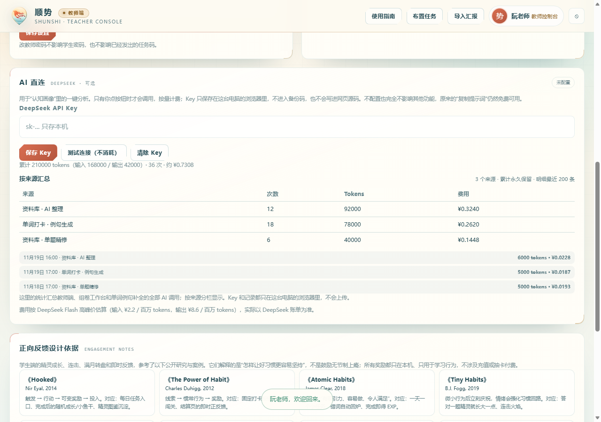
Key 只存本机。它不会进入教师备份码，也不会写进网页源码。不要把 Key 截图发群；如果怀疑泄露，去 DeepSeek 后台删除旧 Key，重新建一个，再回来保存。
最省钱的用法：平时用免费路线；只有赶时间、或需要批量看几个学生时，再用直连。一个学生一学期分析 2–3 次就够了，不需要每次打卡都分析。
WEEKLY RHYTHM
一周只发一次：周计划与体验卡
周计划把“每天想发什么”提前到周末一次做完。系统按每个学生的难度档，把题量拆成 7 天；学生按天解锁，老师不用天天惦记。
发一份周计划 WEEKLY PLAN
- 教师端 →“周备课”。先选这周从哪天开始，再勾选要用的练习卷，可以多选。系统会按总题量自动分到 7 天，不会把一天的题堆到十几道。
- 想加单词日，就选一份单词任务。选中后，第 2 / 4 / 6 天会变成单词闯关，其余 4 天练题；不选就是 7 天都练题。
- 给每个学生调难度档。点名字右边的 − / ＋，1 档最轻、10 档最重；每调一次都会立刻保存。也可以只勾选部分学生，给不同班分开生成。
- 点“生成本周任务码”。每个学生一份独立的周计划码，复制后单独发。学生导入一次，7 天任务就都在他的任务列表里了。
- 学生按天做。完成第 1 天，第 2 天自动解锁；想提前学，点“多学一天”。中途关掉页面，填过的答案和进度会保留。
难度会自动跟着成绩走 AUTO LEVEL
每次导入学生汇报后，系统会取最近 5 次有分数的任务：平均分低于 62，或有一次低于 45，就把难度降一档；平均分 90 以上、每次都不低于 80，并且答题信号正常，就升一档。调整记录写在学生详情的“难度变化”里，下一次生成周计划时生效。只取最近 5 次，是为了避免早期低分一直拖住学生。
这套拆分不花 AI 钱。题量分配、难度匹配和自动调档都在本机计算；只有你主动点“AI 整理”或“AI 分析”并确认时，才会联网计费。
周末上课：生成这一周的上课建议 WEEKLY COACH
- 先导入本周汇报。学生把一周的单词和语法做完后，只发一次汇报码；老师导入后，“周备课”才有数据可看。
- 教师端 →“周备课”。选这周从哪天开始，勾选要上课的学生，点“生成上课建议”。完全在本机计算，不调用 AI、不花钱。
- 看五块内容：本周学情速览、90 分钟课堂流程、语法微课卡、词汇与当堂练习、作业与下周观察。语法微课卡会自动挑本周错得最多的一天；没有数据时从 D1 起步。
- 打印或下载讲义。“打印 / 存 PDF”给老师自己看；“下载学生讲义”只含词汇、语法、练习和参考答案，不含学生姓名和成绩，可以直接发给学生。
- 需要更顺的课堂话术，再点 AI 润色。只发送匿名汇总（人数、正确率、错词、语法错点），不发送姓名和学号；点一次才调用一次，约 300–500 tokens，页面会显示本次用量。
建议怎么用：周五收汇报 → 周六上午生成建议 → 打印老师版、下载学生讲义 → 周末上课直接用。规则版已经能上课，AI 只是可选的润色，不用也不影响。
体验学生：3 天试用，到期可延长 TRIAL PASS
- 添加学生时选“体验学生”。默认 3 天，也可以改成 1–30 天。正式学生不受期限影响。
- 到期后学生端会自动上锁。学生还能看到自己的记录、宠物和进度，但不能继续答题或打卡；页面会出现“申请延长”。
- 学生点“申请延长”，生成申请码发给老师。老师在“体验卡”页粘贴申请码，选延长天数，生成延长码发回；也可以在体验学生名单里直接生成。
- 想转正，就生成“转正码”。学生导入后变成正式学生，之后不再到期；之前的任务、连击、宠物全部保留。
体验卡也是本机身份，不是服务器锁。它适合给自己班以外的试听学生一个清晰的试用边界，但不要把它当成防破解的付费系统。收费仍按方案 A：先手动收款，再手动发码。
BACKUP & USB
备份到“顺势ENGLISH”U 盘
浏览器数据会因清理缓存、换电脑而消失。每周花两分钟，把教师备份码下载到 U 盘，就能把整间教室带走。
- 教师端 →“设置”→“备份与恢复”。点“教师端备份”，系统会生成一段备份码。
- 点“下载为文件”。文件名类似
顺势教师端备份-2026-11-19.txt。这段代码包含学生、任务、汇报和设置。 - 把文件复制到 U 盘。打开“此电脑”→ 名为 顺势ENGLISH 的 U 盘 →
顺势工作台→资料备份。不要只放在桌面，桌面默认在 C 盘。 - 换电脑时恢复。在新电脑打开教师端登录页 →“从备份恢复”→ 粘贴备份码 + 备份时的教师密码。

每周备份清单 WEEKLY
- 周五下课后，导出一次教师端备份码，下载为文件。
- 文件复制到 U 盘
顺势工作台 / 资料备份，按日期命名。 - 抽查一个学生：打开备份文件，确认能看到学生名单和最近任务。
- 换电脑、换浏览器、清理缓存之前，再备份一次。
- 学生端的汇报码也建议留存，尤其是换手机之前。
- 在组卷工作台“设置 → U 盘工作区”选好 U 盘并勾选自动保存后，每次“上传并智能识别”的分类结果会追加到 U 盘
分类记录 / 顺势分类记录.csv，可用 Excel 打开查看。
备份码包含学生密码，是私密文件。不要发到公开群、朋友圈或网盘公开链接。U 盘丢了，相当于学生档案丢了；建议给 U 盘贴个标签，放在固定位置。
为什么放 U 盘？这台电脑的 C 盘空间有限，系统盘塞满会卡顿。U 盘有 200 多 G，专门放备份、源码副本和下载资料，C 盘只留正在运行的网页。
TROUBLESHOOTING
常见问题
先在这里找；找不到再去教师端“设置”里看平台说明。下面的答案都按“数据只在本机”这个前提写。
忘记教师密码了怎么办？
用教师端登录页的“从备份恢复”，粘贴备份码，再输入备份时的教师密码。如果连备份和密码都没有，本机数据无法解密，只能重建控制台。建议把教师密码和备份文件分开保管，但都要在自己的 U 盘里。
学生忘记密码了怎么办？
教师端 → 学生 → 点学生卡片 →“编辑”，重设初始密码并保存。改密码后，之前发出去的任务码会失效，重新生成一份即可。学生本机如果还留着旧档案，需要用旧汇报码 + 旧密码恢复，或重设档案。
任务码提示无效 / 打不开？
先确认三件事：① 复制的是完整一整段，没有漏字符；② 这是发给这个学生的码，不是别人的；③ 学生输入的学号和密码与教师端一致。周合码含 7 天语法，仍会比单日码长一些，点“复制微信消息”最稳，不要手动编辑链接。
语法打卡码和普通任务码有什么不一样？
语法打卡码是一份“7 天小计划”，导入后任务列表里会多出 7 天语法课，每天自动解锁一天；普通任务码通常是一份练习卷。两者都按学号和密码校验，不能混发。学完 7 天，再回教师端生成下一周即可。
学生漏了几天语法课，要重新发吗？
不用。教师端“发布任务 → C 语法专项”选“自动接上”，系统会看这位学生已经完成哪几天，从缺的那天继续生成。已经学过的日子不会重复；想复习，可以点开旧任务重看规则和参考写法。
换手机或换电脑，数据还在吗？
不在原来的浏览器里。教师端用“教师备份码”恢复；学生端用最近的“汇报码”+ 原密码恢复。网页本身不存云端，所以“备份”就是唯一的搬家方式。
数据会上传到服务器吗？
不会。学生、成绩、任务、备注都只保存在这台电脑的浏览器里。只有你主动点“一键分析”时，匿名的学习数据才会发送给 DeepSeek；不点就不发送。公开的学习心得是你手动选择发布的，和私人档案分开。
家长能看到教师端吗？
看不到。教师端需要教师密码；家长和学生只看学生端。学生端只显示自己的任务、等级、宠物和汇报码，不显示其他学生。
宠物数据会丢吗？
宠物成长值跟学生档案一起存在本机。清理浏览器数据会丢；学生换手机时，用汇报码恢复档案，宠物也会一起回来。教师端不需要单独备份宠物。
能装到手机桌面吗？
可以。用手机浏览器打开学生端，点浏览器菜单里的“添加到主屏幕”，就会像一个 App 一样出现。它仍然是网页，数据存在这台手机的浏览器里，换手机要恢复档案。
为什么不做微信小程序？
个人主体的小程序不能用 web-view 打开外部网页，也不能绑定未备案的域名。要上小程序，需要企业/组织主体、已备案的 HTTPS 域名和服务器，成本和维护都更高。现在的网页版可以先“添加到主屏幕”，体验接近 App。
API Key 安全吗？会不会进备份？
Key 只存在这台电脑浏览器的 localStorage 里，不写进网页源码，也不进入教师备份码。换电脑后需要重新粘贴一次。怀疑泄露时，去 DeepSeek 后台删除旧 Key，重建一个。
一次 AI 分析大概花多少？
当前实测约 960 tokens（输入 562 / 输出 398）。具体金额按 DeepSeek 当时的计费标准算；因为关闭了思考模式、限制了输出长度，已经比默认调用省很多。每次点击前都会弹确认，不会偷偷扣额度。
截图里的学生是真的吗？
不是。指南里的姓名、学号、分数都是演示数据，用来展示界面。真实学生信息只在你的教师端和备份文件里。